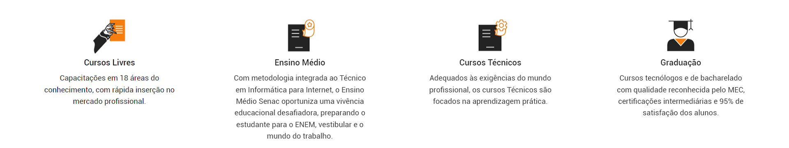

#depoimentos
Betina Farah
A Thais sempre teve muito interesse pela culinária e, recentemente, procuramos o Senac para proporcionar a ela o tão sonhado curso de culinária! Desde o primeiro contato fomos muito bem recebidas, agendamos uma visita e a acolhida foi positiva, nos sentimos muito seguras com todo o carinho e atenção recebidos. A Thais adorou participar do curso. A cada dia que retornava das aulas estava mais interessada e animada. Essa experiência está sendo muito importante para autoestima, desenvolvimento e autoconfiança da Thais. Gostaria de parabenizar a toda equipe do Senac Santa Cruz do Sul pelo excelente atendimento, equipe TOP!
Caren Michele Arce Gonçalves
Quero agradecer pela oportunidade de estagiar no posto de saúde e à equipe de professores que temos no Senac. A cada dia no estágio tínhamos mais certeza da importância das aulas teóricas da professora Aurélia, com todas as diretrizes do SUS e direito das mulheres, crianças, adolescentes e idosos. A profª Franciele, com a ética profissional e prontuários; a profª Vanessa, com as injetáveis, diluição e farmacologia e o profº José, com as aulas práticas no laboratório. Citei apenas alguns, pois sei há mais pessoas que sempre lutam para formar profissionais excelentes. Assim, agradeço a nossa coordenadora, a professora Fernanda, pelo apoio. Obrigada ao Senac por estar nos proporcionando um ensino de qualidade"
Franciele Nunes da Silva Ferreira Kolling
O curso de Extensão de Cílios me deu a oportunidade de trabalhar no ramo da beleza. Na capacitação, aprendi as principais técnicas que me deram segurança para iniciar neste ramo com confiança e prática, já que no próprio curso aplicamos na prática o que nos é ensinado na parte teórica. É um ótimo curso para quem deseja trabalhar no ramo da beleza, que vem crescendo cada dia mais.
Jéssica Pereira
Comecei meu curso de Técnico Segurança do Trabalho em 2018. Foram dois anos de uma experiência inesquecível. Graças as aulas teóricas e práticas, hoje estou bem colocada no mercado de trabalho e apaixonada pela minha profissão. Sou extremamente grata por tudo que vivi no Senac e a todos que fizeram parte desse sonho!
SOBRE NÓS
O Serviço Nacional de Aprendizagem Comercial – Senac é uma instituição de educação profissional, fundada em
10 de janeiro de 1946 com o objetivo de colaborar na obra, difusão e aperfeiçoamento do ensino profissional
no setor terciário. No Rio Grande do Sul, o Senac foi instalado em 13 de setembro do mesmo ano e nos mais de
70 anos de atuação já capacitou mais de 8 milhões de gaúchos. A instituição cumpre a importante missão de
educar para o trabalho em atividades do comércio de bens, serviços e turismo. O Senac-RS faz parte da
Federação do Comércio de Bens e Serviços do Rio Grande do Sul – Fecomércio-RS, o que vincula a entidade ao
mundo do trabalho por meio de 530 mil empresas do comércio de bens, serviços e turismo – que geram um milhão
de empregos formais.
O Senac-RS disponibiliza educação em todos os níveis – do Menor Aprendiz à Pós-Graduação. Atualmente, a
entidade conta com duas faculdades – Faculdade Senac Porto e Faculdade de Tecnologia Senac Pelotas, e mais
de 60 postos de atendimento, entre escolas e unidades, que possibilitam o Senac atender a todos os 497
municípios gaúchos.
Muito antes de se falar em responsabilidade social, o Senac já exercia, na prática, a inclusão social ao
preparar menores aprendizes para o mundo do trabalho. Mais do que ser a sua razão de existir, o Menor
Aprendiz é a prova da importância e contribuição da Instituição para a educação profissional brasileira.
Vinculados ao programa Jovem Aprendiz, por meio da Lei Federal 10.097/200 e Decreto nº 5598/2005, os cursos
de Aprendizagem Comercial, oferecidos gratuitamente pelo Senac-RS, envolvem os alunos em aulas que variam de
1.100 a 1.200 horas de atividades curriculares, das quais metade se referem à capacitação teórica e a outra
metade à prática supervisionada (realizada nas dependências da empresa).
O Programa Senac de Gratuidade (PSG), resultado de um acordo entre o Senac e o Governo Federal em 2008,
significa educação profissional de qualidade para que milhares de pessoas possam planejar seus estudos e ter
mais oportunidade de trabalho e emprego. O PSG oferece cursos de Aprendizagem, cursos de nível técnico,
qualificação técnica, cursos de capacitação e aperfeiçoamento, totalizando mais de 10 mil alunos atendidos
gratuitamente nas unidades educacionais do Estado. Para ter acesso a esses cursos, os candidatos deverão
atender aos seguintes critérios: pessoas com baixa renda, na condição de alunos matriculados ou egressos da
educação básica e trabalhadores – empregados ou desempregados-, priorizando-se aqueles que satisfizerem as
duas condições (aluno e trabalhador). Além disso, a Instituição desenvolve diversos projetos sociais em
parceria com empresas e organização não-governamentais (ONG´s).
Considerando a rapidez das informações e do desenvolvimento tecnológico, o Senac oferece cursos de
capacitação em horários alternativos, aplicando metodologias diferenciadas e personalizadas, laboratórios de
alta tecnologia, atendimentos individualizados em ambientes modernos e confortáveis. Nos diversos níveis de
capacitação, através de aulas presenciais ou à distância, o modelo pedagógico está baseado na apropriação de
competências para o trabalho. O Senac propõe a qualificação de um indivíduo capaz de articular
conhecimentos, habilidades e atitudes com o objetivo de agir, decidir e intervir em situações nem sempre
previstas dentro e fora do mundo do trabalho, promovendo a construção da cidadania.
BANDEIRAS DEFENDIDAS PELA FECOMERCIO-RS
• Gestão pública eficiente e eficaz
• Racionalização dos tributos
• Modernização da relação capital e trabalho
• Formalização e longevidade das empresas
• Educação de qualidade e bem-estar social